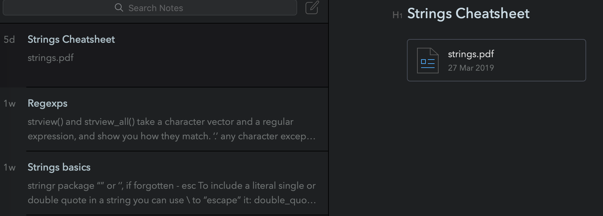

QuantHCI & R for Data Science
This is my blog on R for DataScience and Quantitative methods in HCI.
Midterms analysis
Hi again! Today (11/05) I decided to add to my library code written by Alix d'Agostino. After the midterms it was really interesting to analyze if the exams were passable or not and plots are sooo pretty! Cheers to Alix for sharing!
New week, new post
Hi again! Today (06/05) I decided just to add pdfs with lectures about concepts in statistics to my library. Screenshoting them or re-writing makes no sense, because they are perfectly arranged. This week we've been collecting data and running our experiment, so no more coding parts this time.
Hi-hello
Hi again! Today (30/04 for the 29/04) I'm not really sure what I was supposed to do with my library during the previous week (no lecture, spring break, data collection and with the relational data being already done in the previous post), so this post is just the hello one.
Relational data
Hi again! Today (22/04) I added some data from r4ds about relational data.
That is it for this week. Still don't think that there is any better way to store it all. I think it depends a lot on personality and the way of thinking.. Happy spring break!
Dates and times, data transformation, reflection.
Last week I totally forgot to post, that is a shame. I added new cheatsheet to my notes (dates and times) and I was already storing some code pieces about the data transformation (started to read the book before the semester start). We didn't have a lecture this week, soo nothing more is going into my libary. Also I found during helping my teammates with the data analysis software that I still use google or the r4ds website to find information in most cases, even if I already have the cheatsheet locally, it is faster to find it in the browser.. Maybe I will need to find another way to store it. Today I took a look at most of the blogs and almost all of them just do the same thing as I do - writing the code pieces, adding some images, etc. Also I found out that I use the quanthci19 git (local copy) sometimes - much more convenient than to store the copies of the code somewhere else. That is it for today (13/04).
Strings
Hi again! Today I added a cheatsheet and some code to my library.
This week we didn't get new code, but I found my way of storing quite helpful during the in-class analysis exercise - it was super easy and fast to find facet_grid() in it.
Counterbalancing designs and study protocol
Hi again! Today I added information about counterbalancing design and study protocol to my library.
As of today, I feel that my way of keeping the data in the format of Bear notes is still the most effective and convenient for me. I took a look at others solution and don't feel like any of them will fit me better!
Initial version
Hi! I started to make a Cheatsheet here, and it looked like this:
However, I found it a bit too hard to keep, so I decieded to continue storing it all locally in Bear notes:
So, as you can see, it allows me to keep all the images and code blocks in one place, making a new note for each topic. Maybe in the future I will change the structure again, but as for now it seems to be quite convenient and easy!